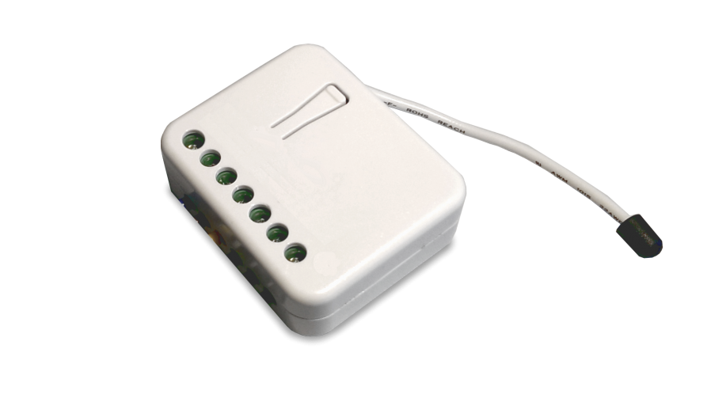
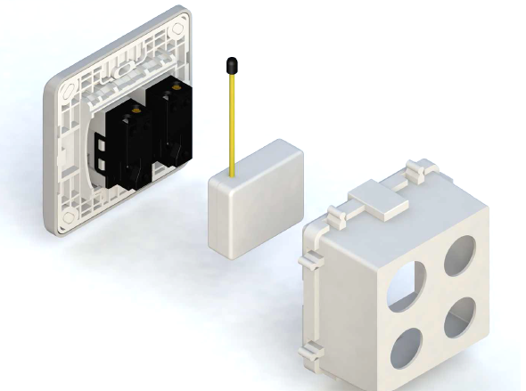
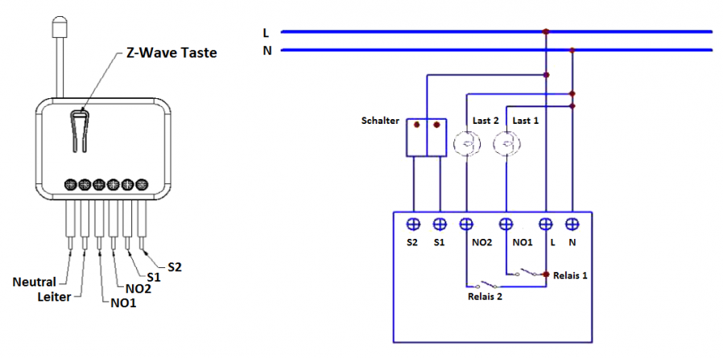

PHI_PAN06
Firmware Version : 1.0 |
 |
KurzinfoA Dieses Gerät ist ein Z-Wave-Aktor. Die Inklusion und Exklusion wird durch dreifaches Klicken auf die Z-Wave-Taste bestätigt. Direkt nach dem Anschließen bleibt das Gerät für 4 Minuten im Auto-Inklusion-Modus. Zur Unterstützung Exklusion und Inclusion im eingebauten Zustand kann der extern angeschlossene Schalter bis zu 3 Minuten nach Zuschalten des Stromes für diese Funktion verwendet werden. Weitergehende Informationen finden sich in den jeweiligen Abschnitten dieses Handbuches. |
Produktbeschreibung
Der Philio Schalteinsatz ermöglicht die Steuerung von zwei unabhängigen Verbrauchern sowohl drahtlos über Z-Wave als auch lokal unter Verwendung eines traditionellen bereits installierten Wandschalters. Aufgrund einer Nulldurchgangserkennung des verwendeten Relais werden diese auch bei stark induktiven oder kapazitiven Lasten wie beu Leuchtstoffröhren oder LEDs geschützt.
Der Schalteinsatz wird in einer Wanddose direkt hinter dem dort bereits befindlichen konventionellen Schalter platziert. Der Schalter schaltet den Verbraucher nun nicht mehr direkt, sondern liefert nur noch ein Steuersignal zum Einsatz, das wiederum den Verbraucher steuert. Dieses Gerät ist für ein Dreileitersystem vorgesehen, dass heisst, es muss zur Installation ein Neutralleiter (blau) vorhanden sein.
Installationsanleitung

Installieren Sie das Gerät in der Unterputzdose und schließen Sie alle Anschlüsse gemäß der Abbildung an.

Verhalten des Gerätes im Z-Wave Netz
I Im Auslieferungszustand ist das Gerät mit keinem Z-Wave-Netz verbunden. Damit es mit anderen Z-Wave Geräten kommunizieren kann, muss es in ein bestehendes Z-Wave Netz eingebunden werden. Dieser Prozess wird bei Z-Wave Inklusion genannt. Geräte können Netzwerke auch wieder verlassen. Dieser Prozess heißt bei Z-Wave Exklusion. Beide Prozesse werden von einem Controller gestartet, der dazu in einen Inklusion- bzw. Exklusion-Modus geschaltet werden muss. Das Handbuch des Controllers enthält Informationen, wie er in diese Modi zu schalten ist. Erst wenn der Controller des Z-Wave Netzes im Inclusion-Modus ist, können Geräte hinzugefügt werden. Das Verlassen des Netzes durch Exklusion führt zum Rücksetzen dieses Gerätes in den Auslieferungszustand.
Zur Bestätigung von Inklusion und Exklusion wird die Z-Wave Taste dreimal schnell hintereinander gedrückt. Direkt nach dem Anschließen bleibt das Gerät für 4 Minuten im Auto-Inklusion-Modus. Zur Unterstützung Exklusion und Inclusion im eingebauten Zustand kann der extern angeschlossene Schalter bis zu 3 Minuten nach Zuschalten des Stromes für diese Funktion verwendet werden.
Bedienung des Gerätes
Manuelle Bedienung
Die manuelle Bedienung erfolgt durch einen an den Einsatz angeschlossenen normalen Schalter. Dabei werden drei Modi unterschieden:
- Schalt-Modus: Die Stellung des Schalters (An/Aus) entspricht dem Schaltzustand des Relais. Wird das Relais durch ein Funkkommando umgeschaltet, ist gegebenenfalls eine doppelte Betätigung des Schalters notwendig. Dieser Modus ist die Werkseinstellung und für bistabile Schalter sinnvoll.
- Tast-Modus: Jedes Schalten des externen Schalters in die Ein-Position löst ein Umschalten des Relais aus. Dieser Modus ist insbesondere für monostabile Schalter (gehen nach Betätigung in ihre Ausgangslage zurück) sinnvoll.
- Tast/Schalt-Modus: Jedes Schalten des externen Schalters löst ein Umschalten des Relais aus. Dieser Modus ist für bistabile Schalter sinnvoll.
Bedienung per Funk
Das Gerät lässt sich mit Z-Wave Controllern von jedem Hersteller bedienen. Sie können Assoziationen erstellen, und andere Z-Wave Geräte wie Sensoren den Zwischenstecker schalten lassen.
Node Information Frame
NIF Der Node Information Frame ist die Visitenkarte eines Z-Wave Gerätes. Es ist ein spezielles Datenpaket, in dem der Gerätetyp sowie die Funktionen des Gerätes bekanntgemacht werden. Inklusion und Exklusion eines Gerätes wird von diesem mit einem Node Information Frame beantwortet. Zusätzlich kann der Node Information Frame für bestimmte Konfigurationsprozesse des Z-Wave Netzes - zum Beispiel das Setzen von Assoziationen - benötigt werden.
Das dreimalige schnelle Drücken der Z-Wave Taste führt zum Aussenden eines Node Information Frame.
Assoziationen - wie werden andere Geräte gesteuert?
A Z-Wave Geräte können andere Geräte direkt steuern. Diese direkte Steuerung heißt in Z-Wave Assoziation. In den steuernden Geräten muss dazu die Geräte-ID des zu steuernden Gerätes hinterlegt werden. Dies erfolgt in sogenannten Assoziationsgruppen. Eine Assoziationsgruppe ist immer an ein Ereignis im steuernden Gerät gebunden (Tastendruck oder Auslösen eines Sensors). Bei Eintritt dieses Ereignisses wird an alle in einer Assoziationsgruppe hinterlegten Geräte ein Steuerkommando gesendet.
Assoziationsgruppen:
| 1 | (max. Anzahl Geräte: 1) |
| 2 | (max. Anzahl Geräte: 1) |
| 3 | (max. Anzahl Geräte: 1) |
Konfigurationseinstellungen
Z-Wave Produkte können direkt nach der Inklusion im Netz verwendet werden. Durch Konfigurationseinstellungen kann das Verhalten des Gerätes jedoch noch besser an die Anforderungen der Anwendung angepasst und zusätzliche Funktionen aktiviert werden.
WICHTIG: Manche Steuerungen erlauben nur die Konfiguration von vorzeichenbehafteten Werten zwischen -128 und 127. Um erforderliche Werte zwischen 128 und 255 zu programmieren, muss der gewünschte Wert minus 256 eingegeben werden. Beispiel: um einen Parameter auf einen Wert von 200 zu setzen, müsste der Wert 200-256 = -56 eingegeben werden, wenn nur positive Werte bis 128 akzeptiert werden. Bei Werten von 2 Byte Länge wird die gleiche Logik angewandt: Werte über 32768 werden als negative Werte angegeben
| Wert | Beschreibung |
|---|---|
| 1 | Relais 1 und Relais 2 (Voreingestellt) |
| 2 — 3 | Relais 1 |
| 3 — 4 | Relais 2 |
| Wert | Beschreibung |
|---|---|
| 1 | Schaltermodus (Voreingestellt) |
| 2 | Tastermodus |
| 3 | Schalter/Tastermodus |
Technische Daten
| Schutzklasse | IP20 |
| Explorer Frames | Nein |
| SDK | |
| Geräteart | Slave with routing capabilities |
| Allgemeiner Z-Wave-Gerätetyp | Binary Switch |
| Spezieller Z-Wave-Gerätetyp | Binary Power Switch |
| Router | Ja |
| FLiRS | Nein |
| Firmware Version | 1.0 |